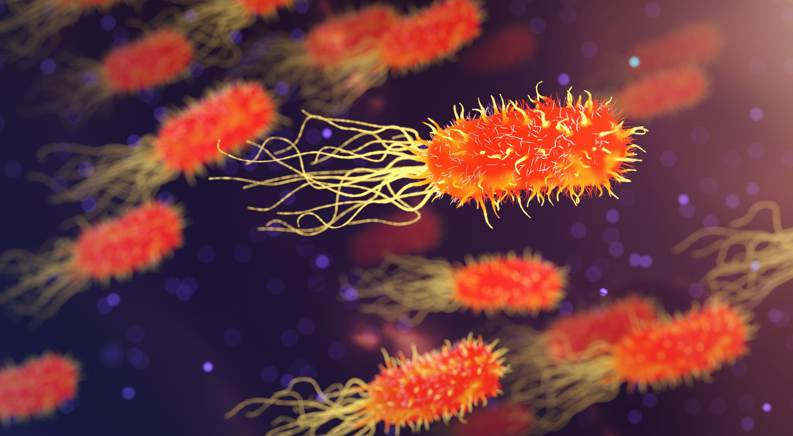
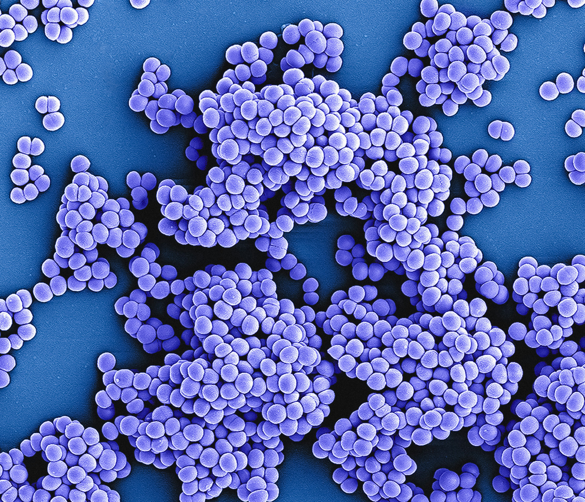
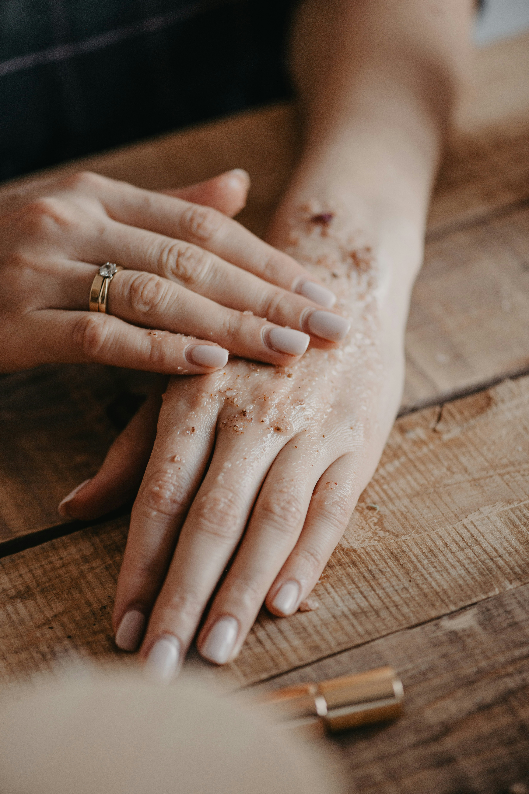
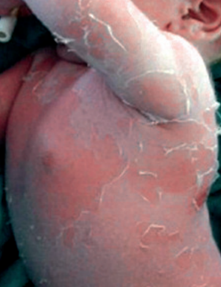
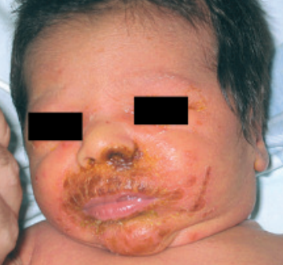

En la microbiología, rama de la medicina encargada del estudio de microorganismos que causan enfermedad en el ser humano, existe una inmensa cantidad de patógenos capaces de causarnos daño. Entre ellos, encontraremos variados tipos de virus, hongos, parásitos y bacterias. Las bacterias, por su parte, son los agentes patógenos que más frecuentemente causan enfermedad, después de los virus, debido a sus capacidades de reproducción e increíbles habilidades para adaptarse y sobrevivir al medio en el que se encuentran.

Es debido a estas características que las bacterias logran invadir un organismo humano y causar enfermedad. Ejemplos de bacterias famosas los hay con abundancia. Sin embargo, ninguna es tan conocida como Staphylococcus aureus, una bacteria pequeña con forma redonda (coco) de la familia de estafilococos (cocos característicos por disponerse en forma de racimos de uva) que cuando se tiñe muestra una coloración violeta (gram positivo).

La razón por la que se le ha denominado "aureus" (dorado) es por su característico color amarillento brillante en medios de cultivo agar sangre. Esta bacteria se encuentra en la piel del ser humano de forma natural, por lo que representa una amenaza al disponer de una vía de entrada, como una herida abierta sin asear. En ese momento, la bacteria entra al organismo y libera proteínas tóxicas para el humano, enfermándolo de gravedad si no se recibe tratamiento oportuno. Aureus puede causar lesiones secas y enrojecidas en zonas cutáneas. Además, puede provocar enfermedad intestinal por intoxicación alimentaria, debido a su capacidad de secretar una enterotoxina increíblemente resistente al calor, por lo que difícilmente se destruye durante la cocción de los alimentos.

En bebés, es capaz de producir la destrucción de los enlaces estructurales entre las células que forman la capa superficial de la piel, resultando en una intensa caída de esta (descamación) acompañada de dolor e hipersensibilidad.


Tratamiento y prevención: se recomienda tomar medidas asépticas inmediatamente después de recibir cualquier daño cutáneo que genere una vía de entrada, así como durante todo el proceso de cicatrización. A modo de tratamiento, debe tenerse una amplia discreción al elegir el antibiótico adecuado para eliminar la infección, debido a que staphylococcus aureus es una de las bacterias que mayor resistencia a antibióticos ha adquirido a través del tiempo. Por lo tanto, se recomienda encarecidamente que visite a su doctor ante cualquier indicio de infección.
Bibliografía: A.P. Nso Roca FBAMJGMCBCMI de JGF del CM. Síndrome de escaldadura estafilocócica de presentación neonatal. Acta pediátrica. 2007.